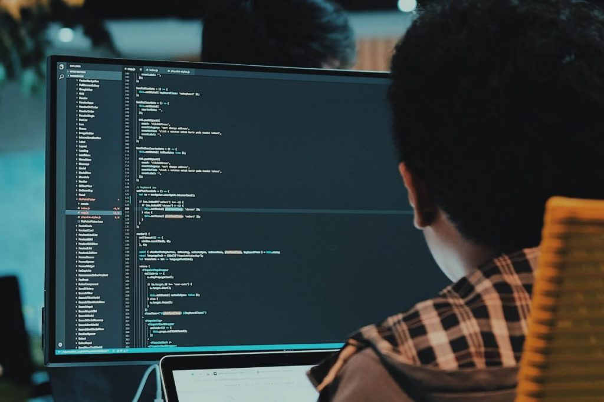

Edgar Chavez
Frontend Developer
Construyo experiencias digitales robustas aprovechando todo el potencial del stack MERN. Desde la implementación de interfaces interactivas hasta la gestión eficiente de bases de datos y APIs RESTful. Comprometido con el desarrollo de software limpio y escalable.
Download CV